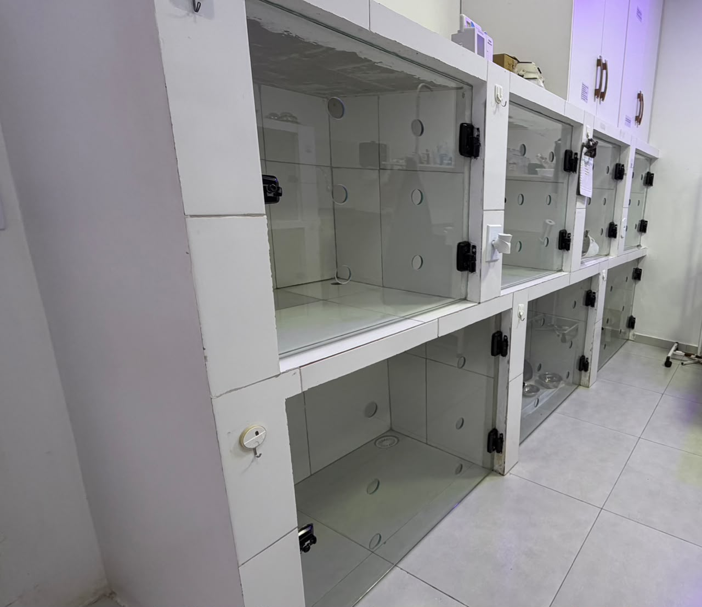
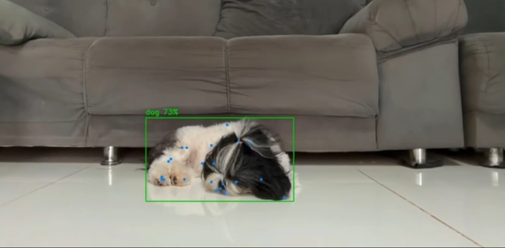

Observação constante
Os profissionais precisam acompanhar diferentes animais durante o plantão.
TECNOLOGIA PARA O CUIDADO ANIMAL
O PETAlerta é uma proposta de sistema que utiliza câmeras, visão computacional e inteligência artificial para auxiliar no acompanhamento de animais em pós-operatório.
Conheça a solução
O PROBLEMA
O acompanhamento pós-operatório depende da observação da equipe. Como os animais são verificados de tempos em tempos, uma alteração pode acontecer enquanto ninguém está olhando.
Os profissionais precisam acompanhar diferentes animais durante o plantão.
Uma alteração pode acontecer entre uma verificação e outra.
A rotina de monitoramento pode aumentar a carga de trabalho dos profissionais.
A SOLUÇÃO
Câmeras instaladas nas baias captam imagens dos animais. O sistema utiliza visão computacional e inteligência artificial para analisar os comportamentos e auxiliar a equipe na identificação de possíveis sinais de dor ou desconforto.
Capturam imagens dos animais nas baias.
O sistema analisa as imagens e os movimentos.
A equipe recebe uma indicação para verificar o animal.
VISÃO COMPUTACIONAL
A proposta utiliza visão computacional para identificar o animal e acompanhar seus movimentos durante o período de monitoramento.

FUNCIONALIDADES
Acompanhamento dos animais por meio das câmeras instaladas nas baias.
Indicação de possíveis alterações para direcionar a atenção da equipe.
Informações organizadas para facilitar o acompanhamento.
Histórico e métricas para apoiar o acompanhamento dos animais.
Digite seu nome para conhecer mais sobre o projeto.